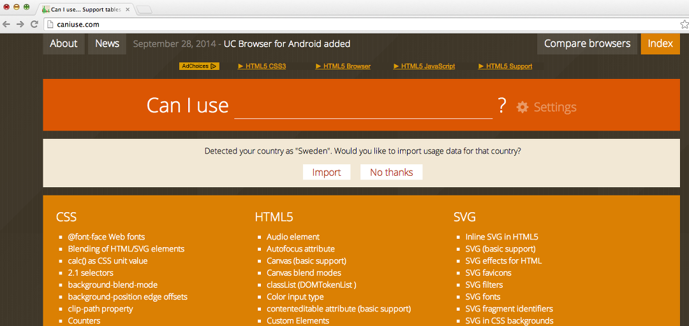
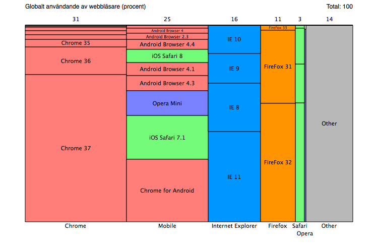
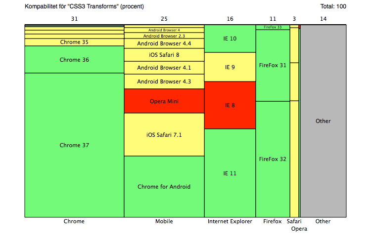
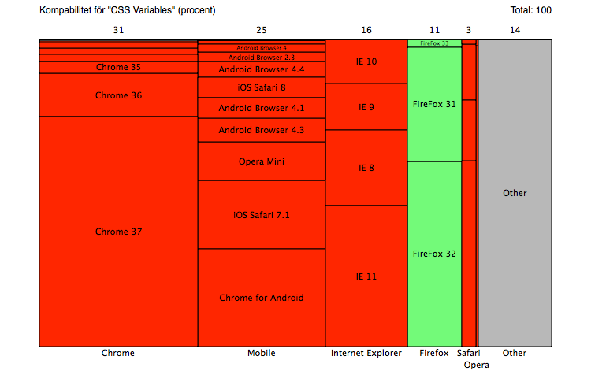
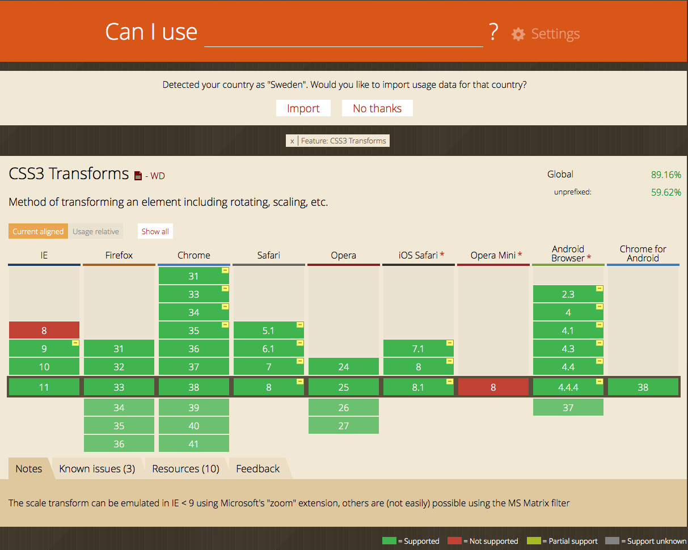

Skapad av Fredrik L.
Under Laboration 5 fick vi bekanta oss med en del nya funktioner inom CSS.
Då blev det tydligt att resultatet skulle skilja sig beroende på vilken webbläsare man använde.
Det jag skrev och testade i Firefox fungerade inte i Internet Explorer.
Handledarna till kursen refererade till en sida:
CanIUse.com
som tydligt illusterade problematiken med att det finns så många olika webbläsare.

Detta inspirerade mig till att göra denna presentation
Baserat på datan som finns att finna på
CanIUse.com
har jag sammanställt denna bild för att illustrera användandet av olika webläsare

Ett exempel från Laboration 5 är CSS3 Transforms. Detta stöds av många webbläsare, antingen helt eller genom ett prefix

Att kunna definiera variabler i CSS är något som jag saknat. Tydligen finns detta, men är enbart kompatibelt med Firefox

